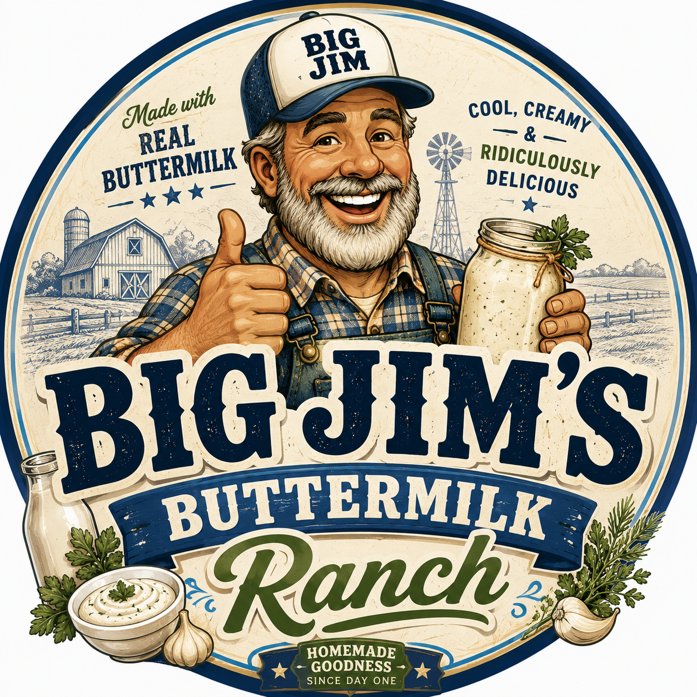

Made the old-fashioned way
Big Flavor.
Big Crunch.
Big Jim's.
Big Jims Pickels gets a brand-first site that feels like the logo: warm cream, deep green, and a spicy red accent. The request form and admin area are already wired in.
- Total requests
- 0
- Pickles
- 0
- Ranch
- 0
Requests stay local for this draft until we connect shared storage.
Request form
Tell Big Jims what you want made
This is the front-end form customers will use before we connect a real backend.
Quality first
Small batches, high standards, and a finish you can hear.
Big Jims treats every jar like it matters because it does. The pickles are made in house from the first trim to the final lid check, with hands-on attention at each step. That keeps the brine bright, the texture crisp, and the flavor consistent from one batch to the next.
We do not chase volume at the expense of character. Instead, the team focuses on clean ingredients, careful timing, and a process that lets the cucumbers stay lively instead of soft. The result is a jar that looks polished, tastes balanced, and delivers the kind of crunch people remember.
Before a batch goes out, it gets a final taste test from KJ, our most respected pickle enthusiast, who checks for snap, seasoning, and that unmistakable fresh-made finish. If it passes KJ, it earns the Big Jims seal of approval.
- Hand-packed one jar at a time for a consistent fill and clean presentation.
- Balanced brine and seasoning for a bold but dependable bite.
- KJ signs off on the final crunch before a batch gets approved.
Ranch line
Cool, creamy, ridiculously delicious.
Big Jim’s ranch gets the same request flow, but with a blue-and-cream identity pulled from the ranch badge artwork.

Admin access
Log in to review pickle and ranch requests
For this draft, the admin area uses a simple local login so we can prove the workflow.